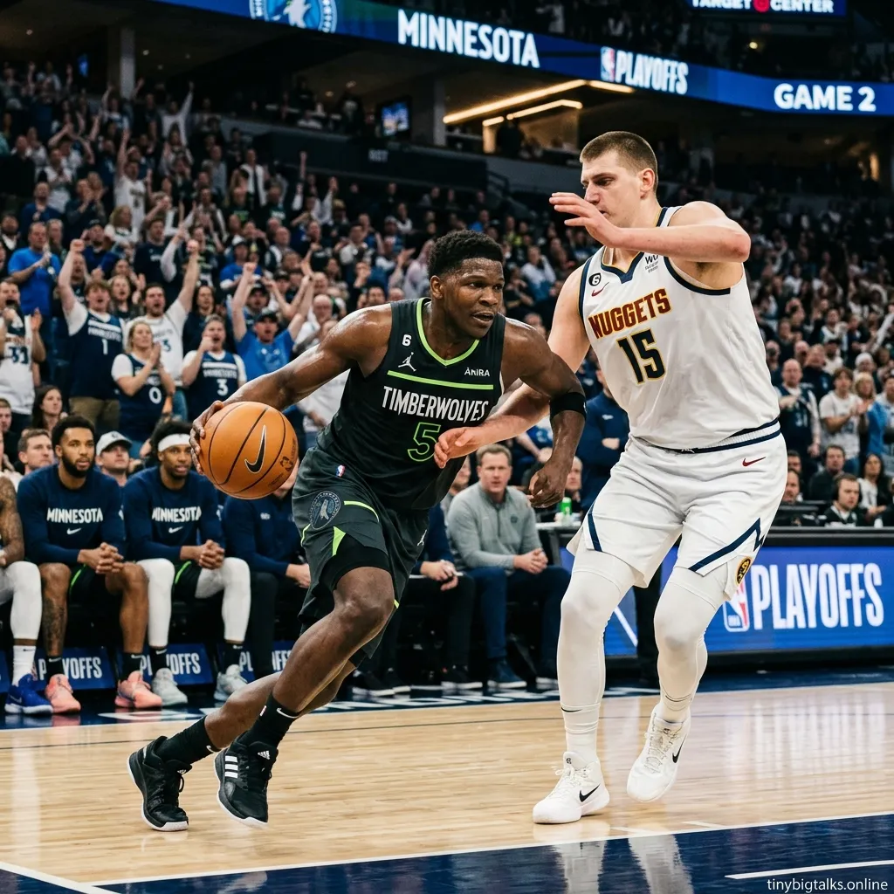

Rory McIlroy Wins Masters 2026: Back-to-Back Green Jacket & $4.5M Prize
McIlroy secures his sixth major title and second consecutive Masters victory at Augusta National, beating Scottie Scheffler by a single stroke.
[Read more]
The Minnesota Timberwolves delivered one of the most stunning comebacks in basketball nba playoffs history on Monday night, rallying from a 19-point hole to defeat the Denver Nuggets 119-114. The timberwolves vs nuggets thriller evened their Western Conference series at 1-1, sending the momentum back to Minneapolis.
Early in the nuggets game, it looked like a runaway for the defending champs. The denver nuggets raced to a 43-24 lead in the second quarter, fueled by the home crowd at Ball Arena. However, the wolves vs nuggets dynamic shifted rapidly after halftime. Anthony Edwards, solidifying his superstar status, poured in 30 points, while julius randle added a crucial 24 points to anchor the interior. The minnesota timberwolves displayed a level of grit that silenced the Denver faithful.
⭐🔥 Recommended: Gift link
Despite the loss, nikola jokic once again proved why he's a three-time MVP, commanding the denver nuggets vs timberwolves matchup with his unique playmaking. christian braun also stepped up for Denver, but the team struggled to contain Minnesota's second-half explosion. Fans looking for the timberwolves vs denver nuggets match player stats will note that Denver's bench depth was tested as the wolves nba defense tightened.
The timberwolves vs denver nuggets timeline showed a dramatic swing in the third quarter, where Minnesota outscored Denver by double digits. For those wondering where to watch timberwolves vs denver nuggets replays, the highlights are already dominating nba games today coverage. The twolves are now heading home with a split, having successfully navigated the high-altitude challenge of Denver.
Minnesota’s victory was built on a balanced attack. The denver nuggets vs timberwolves match player stats reveal that the Wolves' transition game was the difference maker. While jonas valanciunas and other league stars watched from the sidelines, the wolves nuggets showdown became the center of the nba playoffs today conversation. The nuggets vs timberwolves prediction for Game 3 has now shifted significantly, with Minnesota favored by many analysts to take the lead at home.
For those checking the nba games schedule, the next chapter of this denver vs minnesota battle is set for Friday. If you are looking for where to watch nuggets game tonight or denver nuggets game tonight info, please check your local listings for TNT or ESPN coverage. The nuggets timberwolves rivalry is officially the most competitive series in the playoffs right now.
⭐🔥 Recommended: Gift link
The nuggets vs wolves series is lived-up to every bit of the hype. With the timberwolves game successfully secured in Denver, the pressure now shifts to the Nuggets to respond on the road. Whether you call them the mn timberwolves or the twolves, one thing is certain: they are for real. Stay updated with the latest live ipl score (if you're a cricket fan too!) and NBA highlights right here.
For the latest NBA analysis and full game details, check out these sources:

McIlroy secures his sixth major title and second consecutive Masters victory at Augusta National, beating Scottie Scheffler by a single stroke.
[Read more]
A massive fire at the Viva Energy oil refinery in Geelong was extinguished after 12 hours. Discover the cause and the potential impact on Australian petrol prices amid a global fuel crunch.
[Read more]
Discover the features of Poland's e-Urząd Skarbowy mobile app. With the tax office now on their smartphones, Poles can file taxes, receive letters, and pay securely via BLIK 24/7.
[Read more]
Everything you need to know about the Euphoria Season 3 release date, episode schedule, and how to stream Zendaya's return on HBO Max in 2026.
[Read more]
Barcelona crash out of the UEFA Champions League 2026 quarter-finals as Atletico Madrid advance 3-2 on aggregate. Lamine Yamal and Ferran Torres shone but Eric Garcia's red card sealed Barca's fate.
[Read more]